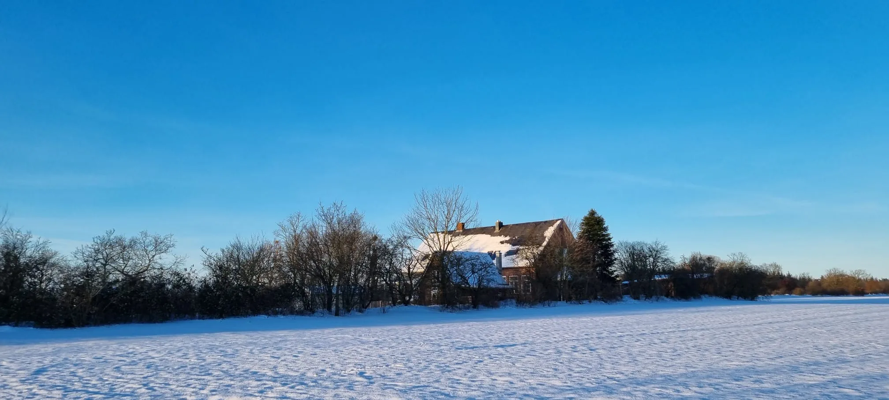
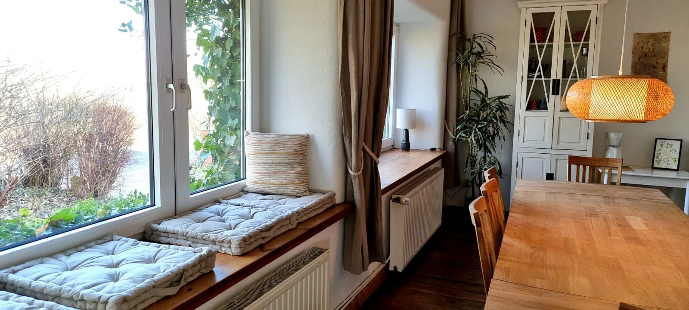
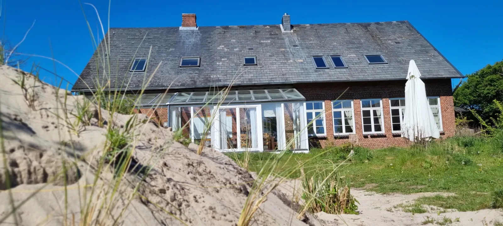

Seminarhaus Alte Schule · Nordsee
Eine historische Schule von 1872 in idyllischer Alleinlage am Rande eines Naturschutzgebiets – nur wenige Kilometer vom Meer.
In Büttjebüll, Nordfriesland, liegt unser Zuhause für diese fünf Tage: ein liebevoll renoviertes Backsteinhaus mit Lehmputz-Wänden, großen Fenstern, hellen Räumen und warmen Holzböden. Ein großer Seminarraum, Kaminöfen und ein weiter Garten mit einer windgeschützten Feuerstelle hinter der Düne – zusammen ergibt das genau die Geborgenheit, die es in der dunklen Jahreszeit braucht.
Rundherum: die Bordelumer Heide mit Wäldern, Wiesen und Heideflächen – und das Wattenmeer, das die Weite und Ruhe des Nordens in den Raum trägt.




Fotos des Hauses: Seminarhaus Alte Schule, mit freundlicher Genehmigung.